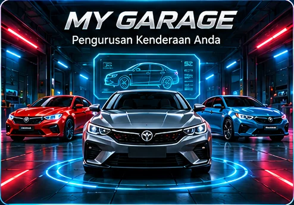
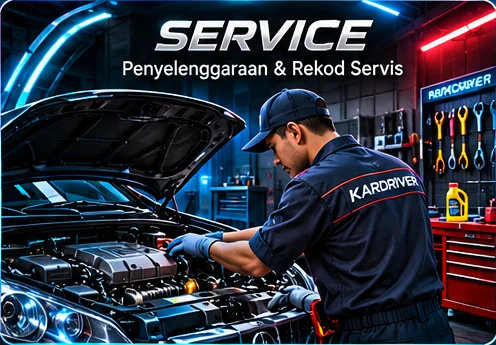
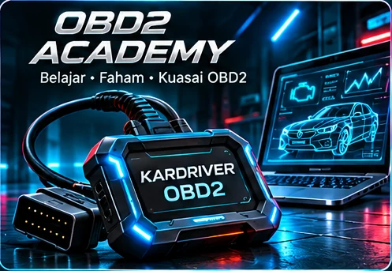
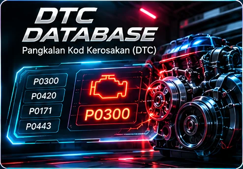
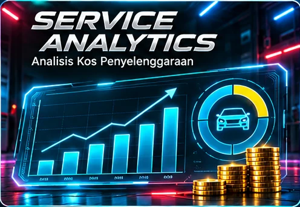

USER LOGIN
Welcome back. Access your automotive dashboard.
New user?
SECURE USER ACCESS · KARDRIVER AUTOHUB
Learn. Diagnose. Repair.
Belajar menggunakan scanner OBD2 daripada asas hingga mahir. Learn automotive diagnostics step by step.
Dashboard Pelajar / Student Dashboard
Teruskan Pembelajaran / Continue Learning
Anda belum menamatkan modul.
Carian Pantas / Quick DTC Search

MY GARAGE
Urus kereta anda, rekod mileage dan pantau penjagaan kenderaan dalam satu tempat.
0 KERETA
DAFTAR KERETA
KERETA SAYA

SERVICE REMINDER
Rekod penyelenggaraan dan pantau jadual servis kenderaan anda.
REKOD SERVIS BARU
SEJARAH SERVIS

KURSUS OBD2 / OBD2 COURSES
Pilih modul mengikut tahap pembelajaran anda.

DTC DATABASE
Pangkalan data kod kerosakan contoh OBD-II generik.

LATIHAN & KUIZ
Uji pengetahuan dan kemahiran diagnostik OBD2 anda.
Apakah fungsi scanner OBD2?
Skor betul / Correct answers: 0
PROFILE / USER
Maklumat keahlian dan kemajuan pembelajaran anda.
MEMBER / USER
Memuatkan nama pengguna...
Email: -
Tarikh daftar: -
FIREBASE ACCOUNTStatus keahlian / Membership: FREE
PAKEJ KEAHLIAN / MEMBERSHIP PLANS
FREE — RM0
1 kenderaan · Akses asas.
PRO — RM29.99 / bulan · RM299 / tahun
Sehingga 5 kenderaan.
MASTERCLASS — RM89.99 / bulan · RM899 / tahun
Sehingga 20 kenderaan.
ROLE MANAGEMENT
Peranan semasa: OWNER
Peranan tambahan memerlukan kelulusan Admin.
Status permohonan: Belum dihantar.
Data Pembelajaran / Learning Data
Kemajuan: 0%
ADMIN CONTROL CENTER
Platform administration · KARDRIVER AUTOHUB
PLATFORM ADMINSYSTEM OVERVIEW
ROLE REQUEST MANAGEMENT
Memeriksa akses Admin...
USER MANAGEMENT
🤖 AI MECHANIC
Diagnosis Assistant / Pembantu Diagnosis Kenderaan
BETA · KARDRIVER AUTOHUB1. MAKLUMAT KENDERAAN / VEHICLE INFORMATION
Masukkan kod untuk semak pangkalan data DTC KARDRIVER.
2. INTERACTIVE TROUBLESHOOTING
Pilih kategori masalah untuk memulakan pemeriksaan berperingkat.